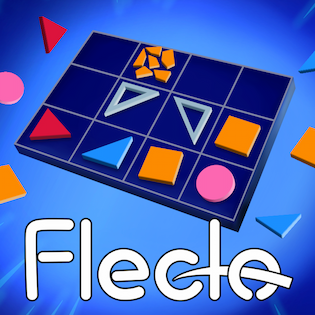
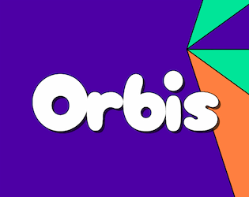
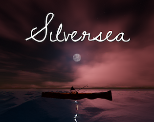
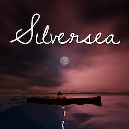
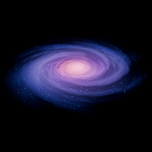
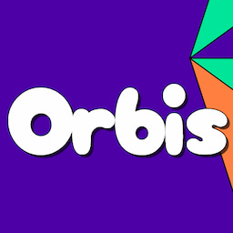

About Me
Hello, I'm ProgrammerOnCoffee (or Coffee for short)! I'm a hobbyist game developer who has been actively using Godot Engine for around 2 years. During that time, I've completed 14 game jams, two of which I've won overall.
I consider myself strongest in programming, but I also have some experience in composing and both 3D and 2D art. In addition to Godot, I'm used to working with common tools including Git, Blender, Krita, and Inkscape.
The A-List
My favorite and highest-ranking projects

Flecto
A puzzle game where you place tiles in order to bounce bullets and shatter targets.
Originally made for the Mini Code for a Cause Jam. Voted #1 in gameplay/fun, #2 in sound/music, and #4 overall out of 145 entries.

Orbis
A fast-paced puzzle game about matching colored orbs to sectors of the same color.
My first jam-winning entry and one of my personal favorites to this day.
View on Itch
Silversea
A relaxing and serene experience about journeying out to sea. Put a record on the gramophone, fish to your heart's content, and enjoy the view.
Created with a focus on graphics and audio. Earned a raw score of 4.500 and 4.167 in each respective category.
View on ItchView all of my jam games on Itch
Photo Reel
Screenshots and media from some of my games
Music Library
A selection of the music I've composed

Silversea - Midnight Fantasy
An introspective and emotional ambient track about dreams in the dead of night. Created for my game Silversea.

Black Cosmos
A spacious and evolving atmospheric track made to the theme "Dark Cosmic Star" during the Indie Den Music and Art Jam. Made with a single, original synth patch on only one track.

Orbis - Main Theme
A bright and catchy tune created for my jam-winning game Orbis.